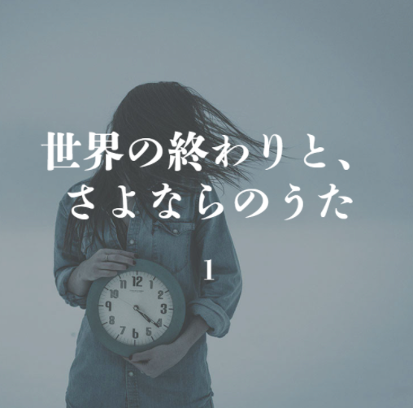

NEWS
2020.10.15

요아소비 콘테스트 vol.1 대상 작품 중 하나인 〈세상의 끝과, 이별의 노래(世界の終わりと、さよならのうた)〉 (미나카미 카나미 저)를 원작으로 한
신곡 '앙코르'가 Google Pixel 5, Pixel 4a(5G) CM송으로 타이업되었다.
2020.10.1
2021년 1월 6일에 첫 피지컬 음반으로서 EP 《THE BOOK》을 발매한다고 발표하였다.
2020.9.18
요아소비 원작 소설 중 밤을 달리다의 원작 〈타나토스의 유혹〉, 그 꿈을 덧그리며의 원작 〈꿈의 물방울과 별의 꽃〉, 아마도의 원작 〈아마도〉, 발매
당시 미발표곡이었던 앙코르의 원작 〈세상의 끝과, 이별의 노래〉 네 편을 묶은 소설집 《밤을 달리다 YOASOBI 소설집》이 출간되었다.
2019.12.15

첫 번째 디지털 싱글 <夜に駆ける>로 데뷔했다.